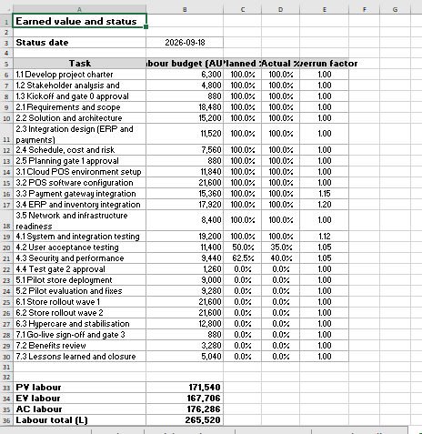

Section 8 of 9
Monitoring, Control and Closure
Section owner: Subodh Lamichhame and RATUL HASAN MUSA
This section shows the status of the project at the reporting date and how it is controlled to close.
Status and variance analysis

Image slot: images/xl_earned_value.pngThe cost performance index is 0.976 and the schedule performance index is 0.978, giving a cost variance of about negative 8,580 and a schedule variance of about negative 8,045. The forecast overspend at completion is about 13,585, and the to-complete performance index of 1.044 shows the efficiency now needed to finish on budget.
Progress against baseline
Issues and corrective actions
The main issues are ERP data mapping defects, a UAT resourcing shortfall, and a delay provisioning the security test environment. Corrective actions add integration and QA capacity, run daily defect triage, and protect a buffer before the freeze, with earned value checked weekly so any further slip is caught early.
Closure, benefits and lessons learned
Closure requires all gates approved, the rollout complete before the freeze, no open critical defects, documentation handed to operations, and sponsor sign-off. Benefits include reduced downtime and maintenance cost, faster checkout, and real-time inventory and reporting. The main lessons are to start ERP integration earlier, build more test buffer, and track earned value from the first week of execution.